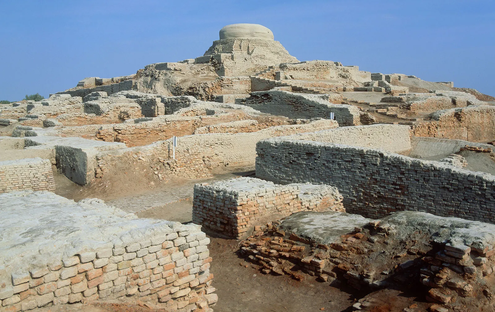
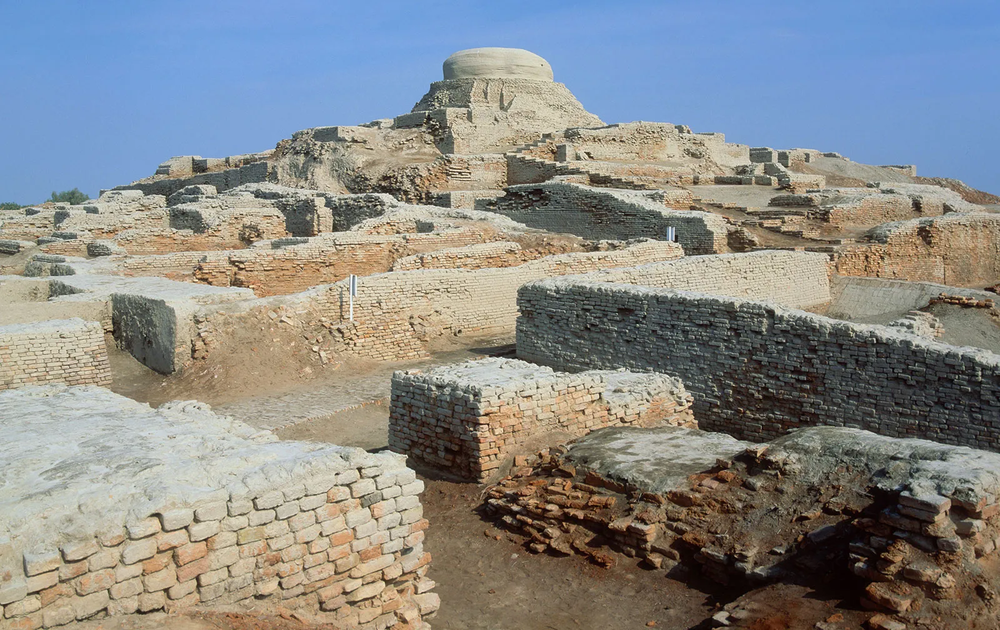
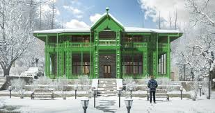
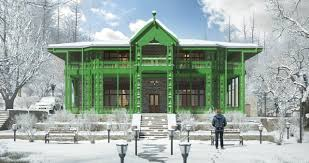
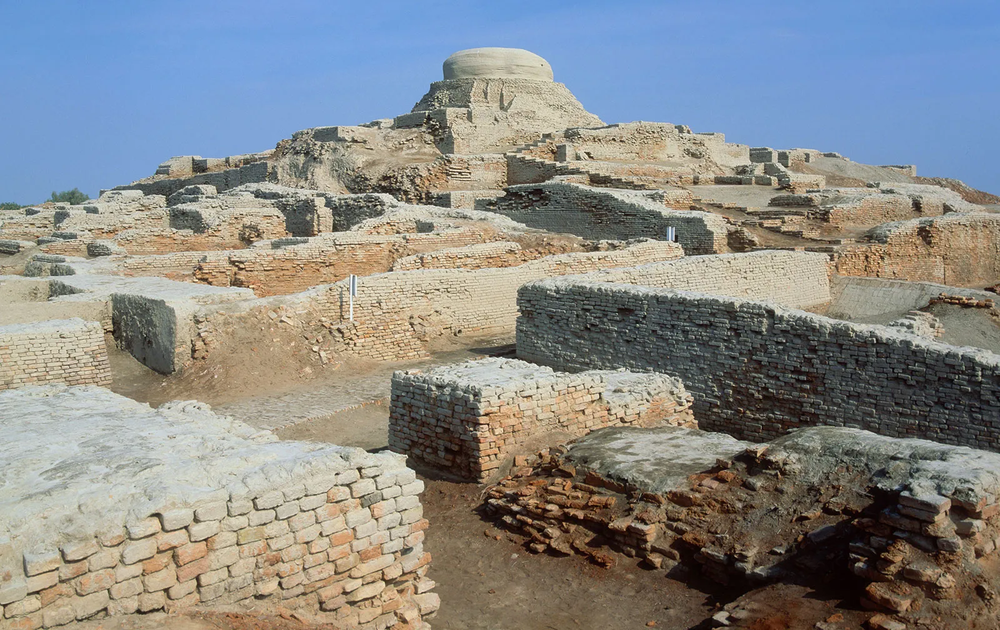
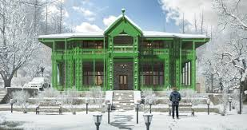

Welcome to the Cultural Heritage of Pakistan
Discover the traditions, provinces, food, and festivals of Pakistan.

 

 


Discover the traditions, provinces, food, and festivals of Pakistan.


Pakistan is a country blessed with a rich cultural heritage, rooted in thousands of years of history and tradition. From the ancient cities of Mohenjo-Daro and Harappa in the Indus Valley Civilization to the grandeur of the Mughal Empire, Pakistan’s land has been home to some of the world’s oldest and most remarkable civilizations. Each province of Pakistan brings its own colors, languages, arts, and customs, reflecting the diversity of its people. The music, poetry, handicrafts, and festivals of Pakistan showcase the spirit of joy and resilience that defines the nation. Its food culture is equally vibrant, offering a wide variety of flavors, from spicy biryani to savory chapli kebabs. Pakistan is not only a land of breathtaking landscapes—ranging from the mighty Himalayas and Karakoram mountains to the deserts of Thar and Cholistan—but also a land where traditions and modern life exist side by side. This website is a journey into the heart of Pakistan’s culture, where history, art, food, and traditions come together to tell the story of a nation with a proud past and a bright future.